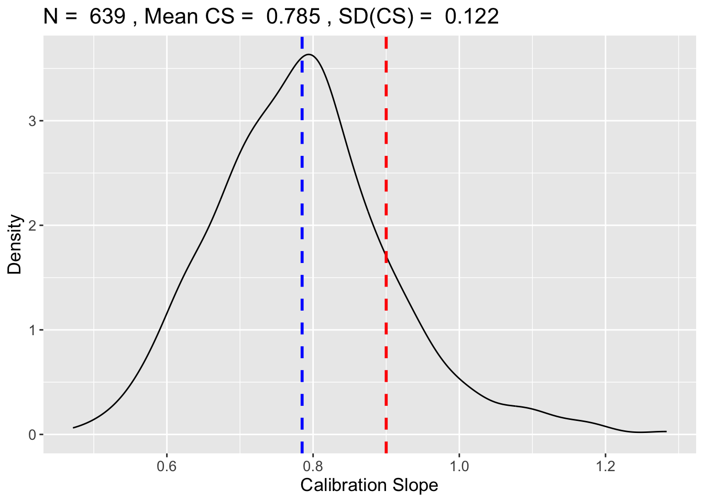
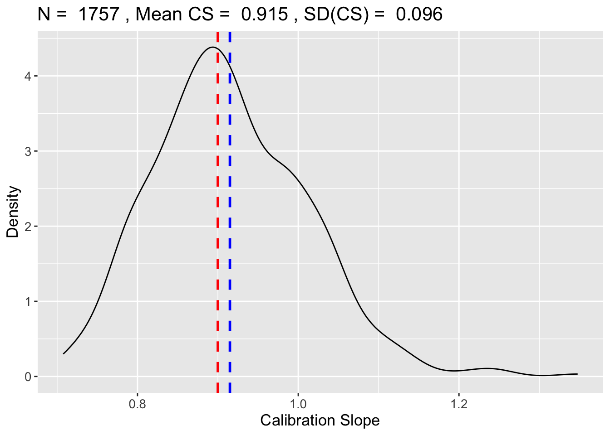
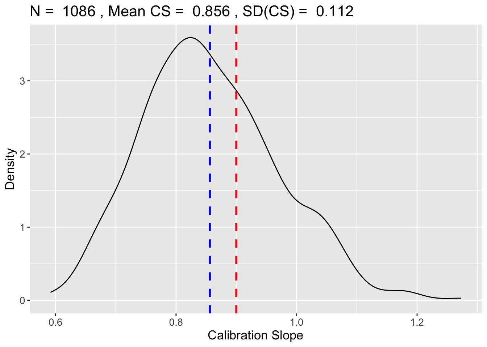
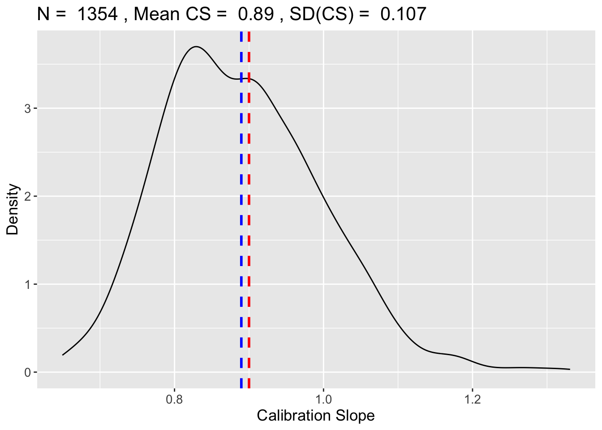
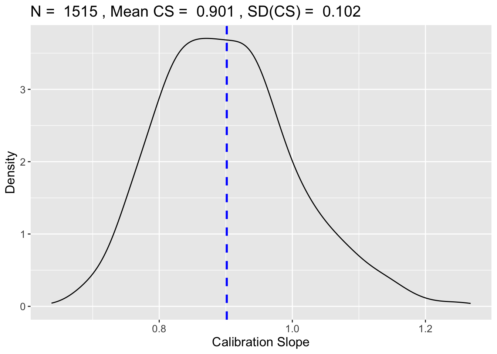
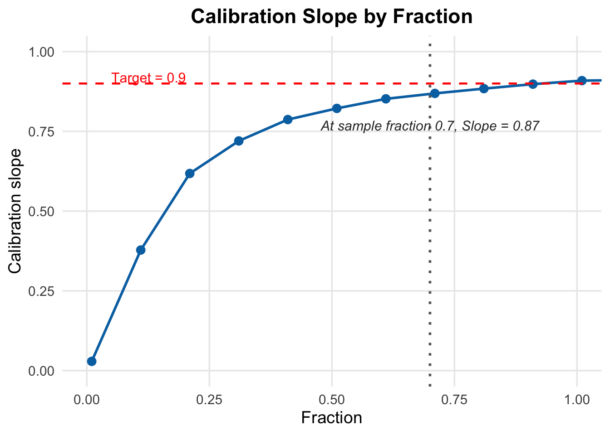

Code
p = 10
I = 0.12
N = (10*p)/I
print(N)[1] 833.3333Risk prediction modelling usually involves building a model of the relative contribution of some predictors to a patient’s risk of some health outcome. Choosing the number of patients required for a model with sufficient performance has been a dark art; rules of thumb like ‘10 events per predictor parameter’ have been used in the past, including in the recent high-risk pregnancy CIPHER study (Payne et al., 2018). The CIPHER paper calculates the required sample size as the 10 times the number of predictors (10), all divided by the estimated prevalence of 12% to scale up accordingly.
Hence, they conclude, 833 women are needed in the study. The 12% prevalance rate is taken from some existing literature (Lapinsky et al., 2011) while the sample size rule of thumb comes from Peduzzi et al. (1996). This study simluated repeated samples of 500 patients from a cardiac cohort with marginal prevalence of 33% and used only 7 predictors. Further, this rule is insensitive to the required level of model performance for use in clinical practice. So it is unclear whether this rule of thumb was entirely suitable for the CIPHER study.
In their defense, there was very little guidance available at the time of the CIPHER study, and since then more sophisticated methods of recommendation have been developed by Riley et al. (YYYY) with recent improvements by Pavlou, Omar and Ambler (YYYY). Pavlou developed a package in R that is able to take account of the required level of model performance (expressed in terms of C-statistic and Calibration Slope) while being able to specify the underlying prevalence and number of predictor parameters.
The CIPHER team specify 0.7 as the AUROC threshold for good discriminative performance, but do not offer a required Calibration Slope. Assuming CS=0.9, we can run this scenario through Pavlou’s samplesizedev package.
[1] "Optimisation Starting, ~ 1 min left..."




[1] 1515The output from samplesizedev here shows that the minimum sample size required to achieve the specified model performance over 1,500 patients. In practice, their model actually achieved good reported performance with their much smaller sample size. They used bootstrap validation and report AUROC=0.82 and CS=0.92.
This recommendation is substantially higher than the number of patients recruited in CIPHER. This may related to the relatively high prevalence in this area. In practice, a study group may go ahead and recruit the rule-of-thumb number patients (or, more realistically, cease efforts to continue recruitment at this point) and hence have only the data from these patients with which to work.
The reccomendation to collect a certain sample size applies only to the development data. Where data are needed for validation, this would ordinarily require collecting an appropriate number of additional records. For example in the case of a 70/30 sample split, we would require an uplift of 42.9%. However, where there are no additional records available, researchers must sacrifice some of their development data when performing split-sample validation.
In this code, I try to identify the size of the sacrifice that is made for each 10% reduction in development data that is made available for validation.
library(ggplot2)
sample_fraction <- 0.70
slope_at_sample_fraction <- results$slope[which.min(abs(results$fraction - sample_fraction))]
ggplot(results, aes(x = fraction, y = slope)) +
geom_point(size = 3, colour = "#0072B2") +
geom_line(linewidth = 1, colour = "#0072B2") +
# Horizontal line for target slope
geom_hline(yintercept = 0.9, linetype = "dashed", colour = "red", linewidth = 0.8) +
annotate("text", x = 0.05, y = 0.92, label = "Target = 0.9",
hjust = 0, colour = "red", size = 4) +
# Vertical line for sample fraction
geom_vline(xintercept = sample_fraction, linetype = "dotted",
colour = "grey40", linewidth = 1) +
# Label moved slightly below the point
annotate("text",
x = sample_fraction,
y = slope_at_sample_fraction - 0.10, # moved down
label = paste0("At sample fraction 0.7, Slope = ", round(slope_at_sample_fraction, 2)),
colour = "grey20", size = 4, fontface = "italic", hjust = 0.5) +
labs(
x = "Fraction",
y = "Calibration slope",
title = "Calibration Slope by Fraction"
) +
coord_cartesian(xlim = c(0, 1), ylim = c(0, 1)) +
theme_minimal(base_size = 14) +
theme(
plot.title = element_text(face = "bold", hjust = 0.5),
panel.grid.minor = element_blank()
)
As can be seen from the chart, the expected calibration slope increases rapidly initially and achieves a slope of 0.87 by the time we get to 70% of the sample used. This means that if we have only collected the recommended sample size, then we can afford to sacrifice 30% of our data to internal validation if we are happy with a small sacrifice in expected calibration slope (loss of only 3.3%).
In the table below we can see that, even at 50% of the required sample size, the expected calibration slope remains at 90% of the target slope. This suggests that sample size recommendations may not be as strict as often thought, and actually we can be more permissive where data are limited.
Attaching package: 'dplyr'The following objects are masked from 'package:stats':
filter, lagThe following objects are masked from 'package:base':
intersect, setdiff, setequal, unionlibrary(gt)
target_slope <- 0.9
table_df <- results %>%
mutate(percent_of_target = slope / target_slope) %>%
arrange(desc(slope))
table_df %>%
gt() %>%
tab_header(title = md("**Calibration Slope by Sample Fraction**")) %>%
cols_label(
fraction = "Fraction",
slope = "Slope",
percent_of_target = "% of Target (0.9)"
) %>%
fmt_number(columns = c(fraction, slope), decimals = 3) %>%
fmt_percent(columns = percent_of_target, decimals = 1) %>%
tab_style(
style = cell_text(align = "center"),
locations = cells_body(columns = everything())
) %>%
tab_options(table.font.size = 14, data_row.padding = px(4))| Calibration Slope by Sample Fraction | ||
|---|---|---|
| Fraction | Slope | % of Target (0.9) |
| 1.210 | 0.929 | 103.2% |
| 1.110 | 0.911 | 101.2% |
| 1.010 | 0.909 | 101.0% |
| 0.910 | 0.898 | 99.8% |
| 0.810 | 0.884 | 98.2% |
| 0.710 | 0.869 | 96.6% |
| 0.610 | 0.852 | 94.7% |
| 0.510 | 0.822 | 91.3% |
| 0.410 | 0.787 | 87.4% |
| 0.310 | 0.720 | 80.0% |
| 0.210 | 0.618 | 68.7% |
| 0.110 | 0.378 | 42.0% |
| 0.010 | 0.029 | 3.2% |